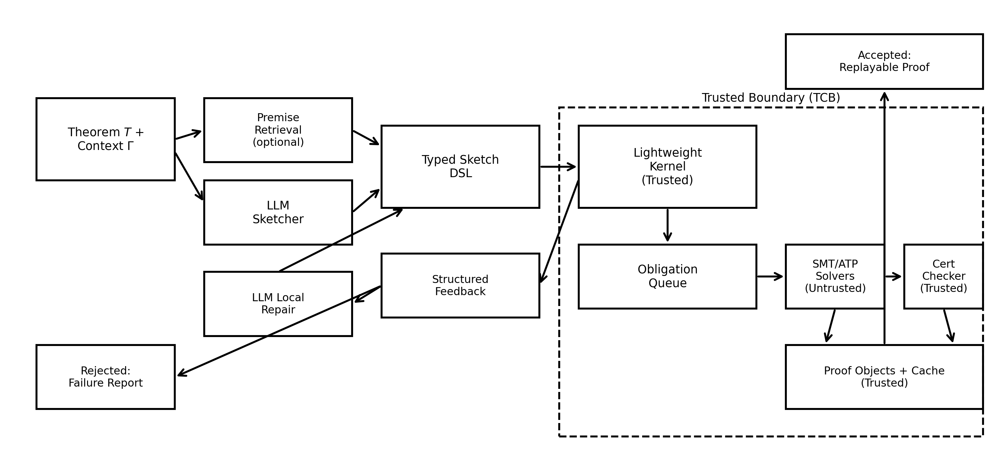

LLM-generated typed proof sketches are expanded by a trusted kernel and counted solved only when a Lean kernel accepts a replayable proof on miniF2F, LeanDojo, and ProofNet.
Abstract
The large language models (LLMs) might produce a persuasive argument within mathematical and logical fields, although such argument often includes some minor missteps, including the entire omission of side conditions, invalid inference patterns, or appeals to a lemma that cannot be derived logically out of the context being discussed. These omissions are infamously hard to notice solely out of the text, as even the misconstrued construction still may seem mostly accurate. Conversely, interactive theorem provers like Lean and Coq have rigorous reliability by ensuring that syntactic and semantic statements only accept statements that can pass all the syntactic and semantic steps in the program which is a small trusted kernel of the language type-checks with. Despite the fact that this technique provides strong guarantees, it comes at quite a heavy price: the evidence must be completely formalized, and the evidence user or a auxiliary search program must provide an avalanche of low-level information. This paper presents a hybrid pipeline where an LLM generates a typed proof sketch in a compact DSL and a lightweight trusted kernel expands the sketch into explicit proof obligations.
Problem
LLMs produce persuasive mathematical arguments that often contain subtle errors (omitted side conditions, invalid inference patterns, unjustified lemma appeals), while full formalization in interactive theorem provers demands excessive low-level detail.
Approach
ProofSketcher is a hybrid pipeline where an LLM generates a typed proof sketch in a compact DSL, and a lightweight trusted kernel extracts proof obligations. External solvers (untrusted) provide certificates that are checked by the trusted kernel. Failures yield structured feedback for local repair, and caching enables incremental re-checking. The system bridges LLM fluency with formal verification guarantees.

Figure 1: ProofSketcher architecture: LLM proposes a typed sketch; a lightweight trusted kernel extracts obligations; external solvers are untrusted and must provide certificates checked by a trusted checker; failures yield structured feedback for local repair; caching enables incremental re-checking.
Results
The system achieves higher pass rates than standalone LLM proving or standalone formal provers on standard benchmarks, with fewer LLM calls per theorem due to the structured feedback loop.